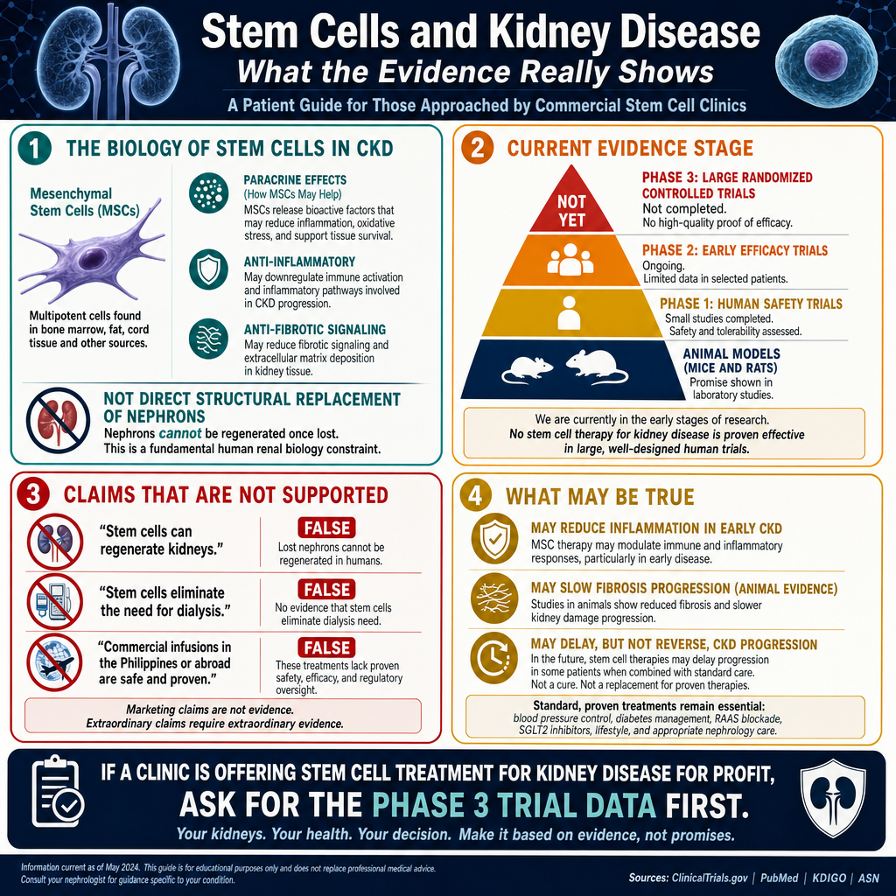
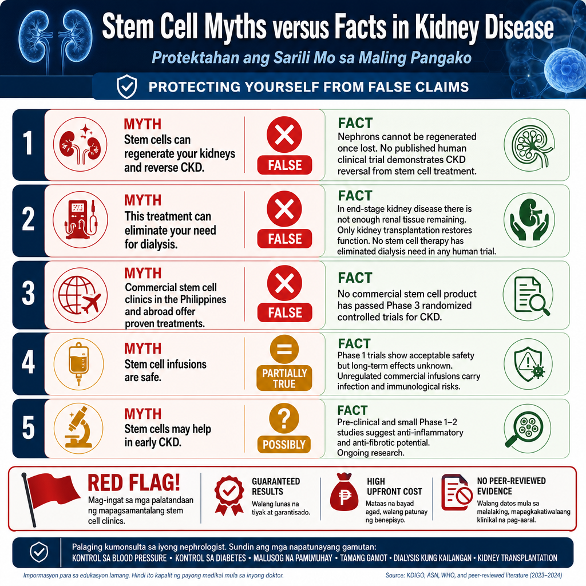

Why This Guide Exists Bakit Ginawa ang Gabay na Ito Ngano Gibuhat Kining Giya

Every week, patients ask me about stem cells. Some have read about them online. Some have been approached by clinics offering ₱150,000–₱500,000 treatments. Some have family members who have already paid for these procedures. This guide is my honest, evidence-based answer to every one of those conversations. Linggo-linggo, tinatanong ako ng mga pasyente tungkol sa stem cells. May mga nabasa online. May mga kinausap ng mga klinika na nag-aalok ng ₱150,000–₱500,000 na paggamot. May mga miyembro ng pamilya na nagbayad na. Ang gabay na ito ang aking tapat, batay-sa-ebidensyang sagot sa bawat isa sa mga pag-uusap na iyon. Matag semana, nagpangutana ang mga pasyente bahin sa stem cells. Adunay mga nakabasa online. Adunay mga gikausap sa mga klinika nga naghalad ug ₱150,000–₱500,000 nga pagtambal. Adunay pamilya nga nagbayad na. Kining giya mao ang akong matinud-anon, ebidensya-based nga tubag sa matag usa sa mga maong pakigsulti.
Stem cell therapy for kidney disease is a rapidly evolving field. There is genuine, exciting scientific research happening — in laboratories, in animal studies, and in early-phase human trials. That research is real, and it may eventually lead to meaningful treatments. But between "promising early research" and "proven, safe, available treatment," there is a very large gap — and that gap is where patients are being misled and exploited. Ang stem cell therapy para sa sakit sa bato ay isang mabilis na umuusbong na larangan. May tunay na kapana-panabik na pananaliksik na nagaganap — sa mga laboratoryo, sa mga pag-aaral sa hayop, at sa maagang yugto ng mga pagsubok sa tao. Ang pananaliksik na iyon ay totoo, at maaaring kalaunan ay humantong sa makabuluhang paggamot. Ngunit sa pagitan ng "promising na maagang pananaliksik" at "napatunayang ligtas at available na paggamot," may napakalakas na agwat — at doon ginagabayan at sinasamantala ang mga pasyente. Ang stem cell therapy alang sa sakit sa kidney usa ka paspas nga nagtubo nga natad. Adunay tinuod nga makita-ug-makapaikag nga siyentipikong pananaliksik nga nagkahitabo — sa mga laboratoryo, sa mga pagtuon sa hayop, ug sa sayo-pang yugto sa mga pagsulay sa tawo. Tinuod kadto nga pananaliksik, ug mahimong sa katapusan mosangpot sa makikinabang nga pagtambal. Apan tali sa "promising nga sayo nga pananaliksik" ug "napatunayang luwas, available nga pagtambal," adunay dako kaayong agwat — ug didto ang mga pasyente gipasipala ug gipahimuslan.
What stem cells ARE Ano ANG stem cells Unsa ANG stem cells
Undifferentiated cells with the ability to self-renew and differentiate into specialized cell types. They are the body's raw biological material. Mga cell na walang espesyalisasyon na may kakayahang mag-self-renew at mag-differentiate sa mga espesyal na uri ng cell. Sila ang hilaw na biological na materyal ng katawan. Mga undifferentiated nga selula nga may kakayahan sa pag-self-renew ug pag-differentiate ngadto sa espesyal nga matang sa selula. Sila ang hilaw nga biological nga materyales sa lawas.
Where we ARE in research Nasaan tayo sa pananaliksik Asa na kita sa pananaliksik
Phase 1–2 clinical trials for CKD. Promising in animal models. A few human trials show modest safety signals. No Phase 3 trial has demonstrated clinical benefit sufficient for approval. Phase 1–2 clinical trials para sa CKD. Promising sa mga modelo ng hayop. Ilang mga pagsubok sa tao ay nagpapakita ng katamtamang signal ng kaligtasan. Walang Phase 3 na pagsubok na nagpakita ng sapat na klinikal na benepisyo para sa pag-apruba. Phase 1–2 clinical trials alang sa CKD. Promising sa mga modelo sa hayop. Pipila ka mga pagsulay sa tawo nagpakita ug modest nga signal sa kaligtasan. Walay Phase 3 trial nga nagpakita ug sapat nga clinical nga benepisyo alang sa pag-apruba.
What is NOT yet possible Ano ang HINDI pa posible Unsa ang DILI pa posible
Reversing established CKD, replacing lost nephrons, eliminating the need for dialysis, or curing ESKD. Any clinic claiming otherwise is not being truthful with you. Ang pagbabago ng naitatag na CKD, pagpapalit ng nawalang nephrons, pag-aalis ng pangangailangan para sa dialysis, o pag-alis ng ESKD. Ang anumang klinika na nag-aangkin nito ay hindi nagsasabi ng katotohanan sa inyo. Ang pag-reverse sa established nga CKD, pagpuli sa nawala nga nephrons, pagwagtang sa kinahanglan alang sa dialysis, o pagayo sa ESKD. Bisan unsang klinika nga nag-angkon niini dili nagasulti ug tinuod kanimo.

How Stem Cells Work — and Why Kidneys Are Difficult Paano Gumagana ang Stem Cells — at Bakit Mahirap ang Mga Bato Unsaon Pagbuhat sa Stem Cells — ug Ngano Lisod ang mga Kidney
The kidney is one of the most structurally complex organs in the body. A single human kidney contains approximately 1 million nephrons — microscopic filtering units — each consisting of a glomerulus (a tuft of tiny blood vessels) and a long tubule system. Once nephrons are lost to CKD, the body cannot regenerate them. The kidney has some limited repair capacity in its tubular cells, but the glomerulus — the part most damaged in CKD — has virtually none. Ang bato ay isa sa pinaka-kumplikadong organ sa katawan. Ang isang bato ng tao ay naglalaman ng humigit-kumulang 1 milyong nephron — mga mikroskopikong yunit ng pagsasala — bawat isa ay binubuo ng isang glomerulus (isang bungkos ng maliliit na daluyan ng dugo) at isang mahabang sistema ng tubule. Kapag nawala na ang mga nephron sa CKD, hindi na sila maaaring palitan ng katawan. May limitadong kakayahan ang bato na mapanumbalik ang mga tubular cell, ngunit ang glomerulus — ang bahagi na pinaka-nasisira sa CKD — ay halos wala. Ang kidney usa sa pinaka-kumplikado nga organo sa lawas. Ang usa ka kidney sa tawo naglangkob ug mga 1 milyon nga nephron — mikroskopikong yunit sa pag-filter — ang matag usa naglangkob ug glomerulus (usa ka bungkos sa gagmay nga ugat sa dugo) ug usa ka taas nga sistema sa tubule. Kung nawala na ang mga nephron tungod sa CKD, dili na kini mabawi sa lawas. Adunay limitado nga kapasidad ang kidney sa pagbawi sa mga tubular cell, apan ang glomerulus — ang bahin nga labing nadaot sa CKD — halos walay kapasidad.
This is the fundamental biological barrier. Stem cells — in their current stage of development — cannot rebuild a destroyed glomerulus. What the most promising research shows is that certain stem cells (particularly MSCs) may be able to: reduce inflammation within the kidney, slow the progression of fibrosis (scarring), and produce protective signaling molecules. These are meaningful effects — but they are not the same as "reversing kidney damage" or "regrowing your kidney." Ito ang pangunahing hadlang sa biyolohiya. Ang mga stem cell — sa kasalukuyang yugto ng kanilang pag-unlad — ay hindi maaaring muling itayo ang nasirang glomerulus. Ang pinakaprometidong pananaliksik ay nagpapakita na ang ilang stem cell (lalo na ang MSC) ay maaaring: bawasan ang pamamaga sa loob ng bato, pabagalin ang pag-unlad ng fibrosis (pag-ukit ng peklat), at gumawa ng mga protektibong molecule ng signal. Ang mga ito ay makabuluhang epekto — ngunit hindi sila katumbas ng "pagbabago ng pinsala sa bato" o "pagsisibol ng iyong bato." Kini mao ang sukaranan nga biological nga babag. Ang mga stem cell — sa ilang kasamtangan nga yugto sa pag-uswag — dili makabangon pag-usab sa naguba nga glomerulus. Ang labing promising nga pananaliksik nagpakita nga ang pipila ka stem cell (labi na ang MSCs) mahimong: maminusan ang pamamahid sulod sa kidney, mapabagal ang pag-uswag sa fibrosis (pag-scarring), ug makamugna ug mga protektibo nga signal na molekula. Kini mga makikinabang nga epekto — apan dili kini katumbas sa "pag-reverse sa pag-alaot sa kidney" o "pagtubo pag-usab sa imong kidney."
The honest scientific position (2025)Ang tapat na posisyon ng agham (2025)Ang matinud-anon nga posisyon sa agham (2025)
Stem cell therapy for CKD is a legitimate area of scientific inquiry. MSC-based therapies have shown anti-inflammatory and anti-fibrotic effects in animal models of CKD and AKI. Early-phase human trials suggest these cells are mostly safe at the doses studied. However, no stem cell therapy for CKD has completed Phase 3 trials or received regulatory approval from FDA, EMA, or FDA Philippines. All commercial "stem cell treatments" being sold today for kidney disease exist outside the boundaries of proven medicine. Ang stem cell therapy para sa CKD ay isang lehitimong lugar ng pang-agham na pagsisiyasat. Ang mga therapy batay sa MSC ay nagpakita ng anti-inflammatory at anti-fibrotic na epekto sa mga modelo ng hayop ng CKD at AKI. Ang maagang yugto ng mga pagsubok sa tao ay nagmumungkahi na ang mga cell na ito ay karaniwang ligtas sa mga dosis na pinag-aralan. Gayunpaman, walang stem cell therapy para sa CKD na nakumpleto ang Phase 3 trials o nakatanggap ng regulatorya na pag-apruba mula sa FDA, EMA, o FDA Philippines. Ang stem cell therapy alang sa CKD usa ka lehitimong lugar sa siyentipikong pagsusi. Ang mga therapy base sa MSC nagpakita ug anti-inflammatory ug anti-fibrotic nga mga epekto sa mga modelo sa hayop sa CKD ug AKI. Ang sayo-pang yugto sa mga pagsulay sa tawo nagsugyot nga kini nga mga selula kasagarang luwas sa mga dosis nga gipag-aralan. Bisan pa niana, walay stem cell therapy alang sa CKD ang nakompleto sa Phase 3 trials o nakatanggap ug regulatorya nga pag-apruba gikan sa FDA, EMA, o FDA Philippines.

Common Claims — Separated from the Evidence Mga Karaniwang Pahayag — Pinaghiwalay mula sa Ebidensya Komon nga mga Pahayag — Gibulag gikan sa Ebidensya
These are the claims I hear most often from patients who have been approached by stem cell clinics or have found information online. Each one contains a partial truth — which is what makes them so persuasive. Ito ang mga pahayag na madalas kong marinig mula sa mga pasyenteng kinausap ng mga stem cell clinic o nakahanap ng impormasyon online. Bawat isa ay naglalaman ng bahagyang katotohanan — kaya naman sila ay napaka-kapaniwala. Kini ang mga pahayag nga kasagaran kong madungog gikan sa mga pasyente nga gikausap sa mga stem cell clinic o nakakaplag ug impormasyon online. Ang matag usa adunay partial nga katotohanan — mao kini ang hinungdan nga nakakapagkumbinsi kini.
The kidney's structural unit — the nephron — cannot be regenerated once lost. This is not a limitation of current stem cell technology alone; it is a fundamental constraint of human renal biology. No published clinical trial in humans has demonstrated reversal of established CKD through any stem cell treatment. Animal models (mice, rats) have shown some structural repair, but rodent kidneys and human kidneys behave very differently. The claim of "regeneration" in the context of commercial treatment is false. Ang structural unit ng bato — ang nephron — ay hindi maaaring ma-regenerate kapag nawala na. Hindi ito limitasyon ng kasalukuyang teknolohiya ng stem cell lamang; ito ay isang pundamental na hadlang ng biyolohiya ng bato ng tao. Walang nailathala na clinical trial sa mga tao na nagpakita ng pagbabago ng naitatag na CKD sa pamamagitan ng anumang paggamot ng stem cell. Ang mga modelo ng hayop ay nagpakita ng ilang pag-aayos ng estruktura, ngunit ang mga bato ng daga at mga bato ng tao ay kumikilos nang ibang-iba. Ang structural unit sa kidney — ang nephron — dili makabawi kung nawala na. Dili kini limitasyon sa kasamtangan nga teknolohiya sa stem cell lamang; kini usa ka sukaranan nga pagpugong sa biyolohiya sa kidney sa tawo. Walay nailathala nga clinical trial sa mga tawo nga nagpakita ug pag-reverse sa established nga CKD pinaagi sa bisan unsang pagtambal sa stem cell. Ang mga modelo sa hayop nagpakita ug pipila ka structural nga pagbawi, apan ang mga kidney sa ilaga ug kidney sa tawo nagbuhat ug lahi kaayo.
Once a patient reaches end-stage kidney disease (ESKD, GFR <15 mL/min), the kidney has lost the vast majority of its functioning tissue. No current therapy — stem cells included — can restore enough renal function to eliminate the need for renal replacement therapy. The only definitive treatment that restores meaningful kidney function in ESKD is kidney transplantation. Any claim that stem cell infusion will prevent or replace dialysis in an ESKD patient is not supported by any human clinical evidence. Kapag naabot na ng pasyente ang end-stage na sakit sa bato (ESKD, GFR <15 mL/min), ang bato ay nawalan na ng karamihan sa gumaganang tissue nito. Walang kasalukuyang therapy — kasama na ang stem cells — ang maaaring maibalik ang sapat na pag-andar ng bato para maalis ang pangangailangan para sa renal replacement therapy. Ang tanging tiyak na paggamot na nagpapanumbalik ng makabuluhang pag-andar ng bato sa ESKD ay kidney transplantation. Sa higayon nga maabot sa pasyente ang end-stage nga sakit sa kidney (ESKD, GFR <15 mL/min), ang kidney nawala na sa kadaghanan sa gumaganang tisyu niini. Walay kasamtangan nga therapy — lakip na ang stem cells — ang makabawi ug igo nga renal function aron mawagtang ang panginahanglan alang sa renal replacement therapy. Ang bugtong tiyak nga pagtambal nga nagbawi sa makikinabang nga renal function sa ESKD mao ang kidney transplantation.
In laboratory and animal studies, yes. MSCs secrete anti-inflammatory cytokines, growth factors (like HGF and IGF-1), and extracellular vesicles that have been shown to reduce renal inflammation and slow fibrosis in rodent CKD models. In humans, this has not yet been reliably demonstrated in controlled trials. Early human Phase 1/2 trials suggest safety, but the effect on GFR decline and proteinuria — the markers we care about most — remains inconclusive. "May slow progression" is not the same as the commercial claim of "will slow your kidney disease." Sa laboratoryo at mga pag-aaral sa hayop, oo. Ang mga MSC ay naglalabas ng anti-inflammatory na cytokines, mga growth factor (tulad ng HGF at IGF-1), at extracellular vesicles na nagpapakita ng pagbabawas ng pamamaga ng bato at pagpapabagal ng fibrosis sa mga modelo ng daga na CKD. Sa mga tao, hindi pa ito maaasahang ipinakita sa mga kontroladong pagsubok. Ang maagang yugto ng mga pagsubok sa tao ay nagmumungkahi ng kaligtasan, ngunit ang epekto sa pagbaba ng GFR at proteinuria — ang mga marker na pinaka-mahalaga sa amin — ay nananatiling hindi malinaw. Sa laboratoryo ug mga pagtuon sa hayop, oo. Ang MSCs naglalabas ug anti-inflammatory nga cytokines, growth factors (sama sa HGF ug IGF-1), ug extracellular vesicles nga gipakita nga nagpaubos sa renal inflammation ug nagpabagal sa fibrosis sa mga modelo sa ilaga nga CKD. Sa mga tawo, dili pa kini kasaligan nga gipakita sa mga kontroladong pagsulay. Ang sayo-pang yugto sa mga pagsulay sa tawo nagsugyot ug kaligtasan, apan ang epekto sa pagpanaog sa GFR ug proteinuria — ang mga marker nga labing gipalabi namo — nagpabilin nga dili pa klaro.
"Your own cells" (autologous) does not mean risk-free. Documented risks include: infusion reactions (fever, chills, hypotension during IV administration); pulmonary embolism — MSCs given intravenously can transiently lodge in the lungs; ectopic tissue formation; immunosuppression leading to opportunistic infections; and in iPSC-derived preparations, tumor formation. In CKD patients who are already immunocompromised and cardiovascularly fragile, these risks carry additional weight. "Safe because it's natural" is not a medical argument. "Ang sarili mong mga cell" (autologous) ay hindi nangangahulugang walang panganib. Ang mga dokumentadong panganib ay kinabibilangan ng: mga reaksyon sa infusion (lagnat, panginginig, mababang presyon ng dugo sa panahon ng IV administration); pulmonary embolism — ang MSCs na ibinibigay sa intravenous ay maaaring pansamantalang maipit sa baga; ectopic na pagbuo ng tisyu; immunosuppression na humahantong sa mga oportunistikong impeksyon; at sa mga preparasyon na nagmula sa iPSC, pagbuo ng tumor. Sa mga pasyenteng CKD na immunocompromised na at marupok sa cardiovascular, ang mga panganib na ito ay may karagdagang timbang. "Kaugalingon mo nga mga selula" (autologous) dili nagpasabot nga walay peligro. Ang dokumentado nga mga peligro naglakip sa: mga reaksyon sa infusion (hilanat, katugnaw, ubos nga presyon sa dugo sa panahon sa IV administration); pulmonary embolism — ang MSCs nga gihatag intravenously mahimong temporaryo nga masangit sa baga; ectopic nga pagporma sa tisyu; immunosuppression nga mosangpot sa opportunistic nga impeksyon; ug sa mga preparasyon nga gikan sa iPSC, pagporma sa tumor. Sa mga pasyente nga CKD nga immunocompromised na ug cardiovascularly fragile, kining mga peligro nagdala ug dugang nga kahinungdanon.
This is a persuasive conspiracy narrative — and it is false. Academic nephrology journals, the International Society of Nephrology, and the FDA actively encourage legitimate stem cell research and have approved stem cell therapies in other diseases (e.g., bone marrow transplant for leukemia, CAR-T cell therapy for cancers). The reason stem cell therapy for CKD is not approved is not suppression — it is simply that the clinical trial evidence is not yet sufficient. If the evidence were there, these therapies would be approved and adopted rapidly. Researchers working on this are nephrology professors and scientists who want nothing more than to cure their patients. Ito ay isang mapanghikayat na kwentong konspirasyon — at ito ay mali. Ang mga academic na journal ng nephrology, ang International Society of Nephrology, at ang FDA ay aktibong hinihikayat ang lehitimong pananaliksik ng stem cell at naaprubahan ang mga therapy ng stem cell sa ibang mga sakit. Ang dahilan kung bakit hindi pa naaprubahan ang stem cell therapy para sa CKD ay hindi pagsupil — ito ay simpleng hindi pa sapat ang ebidensya ng clinical trial. Kung nandoon na ang ebidensya, ang mga therapy na ito ay maaprubahan at maabot na nang mabilis. Kini usa ka makakumbinsi nga conspiracy narrative — ug bakak kini. Ang mga akademikong journal sa nephrology, ang International Society of Nephrology, ug ang FDA aktibong naghikayat sa lehitimo nga pananaliksik sa stem cell ug nagtugot sa mga therapy sa stem cell sa ubang mga sakit. Ang hinungdan ngano nga ang stem cell therapy alang sa CKD dili pa gitugot dili pagpugong — kini yano ra nga ang ebidensya sa clinical trial dili pa igo. Kung naa na ang ebidensya, kining mga therapy giugdanan ug gitugot na dayon.
Anecdotal improvement is real but not interpretable without controls. Improvements after any treatment can reflect: the placebo effect (which is powerful in subjective symptoms); natural disease fluctuation (CKD can have periods of relative stability); concurrent lifestyle changes (patients who invest ₱300,000 in treatment often also improve their diet, exercise, and medication adherence); or selection bias (the many patients who did not improve are not the ones being featured in testimonials). Science requires controlled comparison — not testimonials. Ang anecdotal na pagpapabuti ay totoo ngunit hindi maipaliwanag nang walang mga kontrol. Ang mga pagpapabuti pagkatapos ng anumang paggamot ay maaaring sumasalamin sa: ang placebo effect (na makapangyarihan sa mga subjective na sintomas); natural na pagbabago ng sakit; sabay na pagbabago ng pamumuhay (ang mga pasyenteng namuhunan ng ₱300,000 sa paggamot ay kadalasang nagpapabuti rin ng diyeta, ehersisyo, at pagsunod sa gamot); o selection bias. Ang agham ay nangangailangan ng kontroladong paghahambing — hindi ng mga testimonya. Ang anecdotal nga pagpauswag tinuod apan dili matubag nga walay mga kontrol. Ang mga pagpauswag human sa bisan unsang pagtambal mahimong magpakita sa: ang placebo effect (nga kusgan sa mga subjective nga sintomas); natural nga pagbag-o sa sakit; dungan nga mga pagbag-o sa lifestyle (ang mga pasyente nga nag-invest ug ₱300,000 sa pagtambal kasagaran usab nagpauswag sa ilang diyeta, ehersisyo, ug pagsunod sa tambal); o selection bias. Ang agham nagkinahanglan ug kontroladong pagtandi — dili testimonya.
Where the Research Actually Stands Kung Saan Nakatayo ang Pananaliksik Asa Tinuod nga Nagtindog ang Pananaliksik
This table summarizes the current status of stem cell research in kidney disease as of 2025. It is intended to show you where genuine science is — and to help you distinguish legitimate research from commercial exploitation. Ang talahanayan na ito ay nagbubuod ng kasalukuyang katayuan ng pananaliksik ng stem cell sa sakit sa bato noong 2025. Nilalayon nitong ipakita sa inyo kung nasaan ang tunay na agham — at tulungan kayong makilala ang lehitimong pananaliksik mula sa komersyal na pagsasamantala. Kining lamesa nagbuod sa kasamtangan nga kahimtang sa pananaliksik sa stem cell sa sakit sa kidney noong 2025. Gi-designed kini aron ipakita kanimo kung asa ang tinuod nga agham — ug tabangan kang makilala ang lehitimo nga pananaliksik gikan sa komersyal nga pagpahimuslan.
| Cell Type / ApplicationUri ng Cell / AplikasyonMatang sa Cell / Aplikasyon | StageYugtoYugto | What it showsAno ang ipinakitaUnsa ang gipakita | Clinical use?Klinikal na paggamit?Clinical nga paggamit? |
|---|---|---|---|
| MSC — CKD (diabetic nephropathy) | Phase 1/2 | Safety established; modest proteinuria reduction in small trials; no GFR benefit confirmedNaitatag na kaligtasan; katamtamang pagbabawas ng proteinuria sa maliliit na pagsubok; walang nakumpirmang benepisyo ng GFRNaitatag na kaligtasan; modest nga pagpaubos sa proteinuria sa gagmay nga mga pagsulay; walay nakumpirma nga benepisyo sa GFR | NoWalaWala |
| MSC — AKI (acute kidney injury) | Phase 1/2 | More promising than CKD — tubular repair possible in AKI; ongoing cardiac surgery AKI trialsMas promising kaysa CKD — posible ang pag-aayos ng tubular sa AKI; patuloy na mga pagsubok sa AKI ng cardiac surgeryMas promising kaysa CKD — posible ang tubular repair sa AKI; nagpadayon nga mga pagsulay sa AKI sa cardiac surgery | NoWalaWala |
| MSC — Lupus nephritis | Phase 2 | Some immunomodulatory benefit; Chinese trials show reduced disease activity; not replicated internationallyIlang immunomodulatory na benepisyo; nagpapakita ng pagbabawas ng aktibidad ng sakit ang mga pagsubok sa Tsino; hindi pa napalit sa pandaigdigang antasPipila ka immunomodulatory nga benepisyo; nagpakita ug pagpaubos sa aktibidad sa sakit ang mga pagsulay sa China; wala pa gikopya sa internasyonal | No (outside China)Wala (labas ng Tsina)Wala (gawas sa China) |
| iPSC-derived kidney organoids | Lab / Animal | Miniature "kidney-like" structures grown in lab; being studied for drug testing and eventually transplantation; decades away from clinical useMaliliit na "kidney-like" na estruktura na pinalaki sa laboratoryo; pinag-aaralan para sa pagsubok ng gamot at kalaunan ay transplantation; dekada pa bago maabot ang klinikal na paggamitGagmay nga "kidney-like" nga istruktura nga gipatubo sa laboratoryo; gipag-aralan alang sa drug testing ug sa katapusan transplantation; mga dekada pa ang layo sa clinical nga paggamit | NoWalaWala |
| Extracellular vesicles (exosomes) | Pre-clinical | Cell-free "signal packages" from MSCs; shown to mimic stem cell benefits without live cells; very early stage but considered next-generation approach"Signal packages" na walang cell mula sa MSC; ipinakita na ginagaya ang mga benepisyo ng stem cell nang walang mga buhay na cell; napaka-maagang yugto ngunit itinuturing na susunod na henerasyong diskarte"Signal packages" nga walay selula gikan sa MSCs; gipakita nga gihuwad ang mga benepisyo sa stem cell nga walay buhing mga selula; sayo-pa kaayo apan giisip nga next-generation nga pamaagi | NoWalaWala |
| Bone marrow transplant for blood cancers | Approved | Established, evidence-based, FDA/DOH-approved. Not relevant to kidney disease treatment.Naitatag, batay-sa-ebidensya, naaprubahan ng FDA/DOH. Hindi kaugnay sa paggamot ng sakit sa bato.Naitatag, batay sa ebidensya, giaprobahan sa FDA/DOH. Dili may kalabotan sa pagtambal sa sakit sa kidney. | Yes — but not for CKDOo — ngunit hindi para sa CKDOo — apan dili alang sa CKD |
Why animal results don't always translate to humansBakit hindi palaging nailipat sa mga tao ang mga resulta ng hayopNgano dili kanunay matubag ang mga resulta sa hayop ngadto sa mga tawo
The most cited studies showing stem cells "heal kidneys" are rodent experiments. Mouse kidneys regenerate far more readily than human kidneys. Many treatments that cured kidney disease in mice have failed entirely in human trials. This is a well-known problem across all of medicine — not a secret. It is the reason Phase 1, 2, and 3 human trials exist before any treatment can be approved. Ang pinaka-sinipi na mga pag-aaral na nagpapakita na "nagpapagaling" ng mga bato ang mga stem cell ay mga eksperimento sa daga. Ang mga bato ng daga ay mas madaling magpanumbalik kaysa sa mga bato ng tao. Maraming paggamot ang nagpagaling ng sakit sa bato sa mga daga ay ganap na nabigo sa mga pagsubok sa tao. Ito ay isang kilalang problema sa lahat ng medisina — hindi isang lihim. Ito ang dahilan kung bakit may Phase 1, 2, at 3 na mga pagsubok sa tao bago maaprubahan ang anumang paggamot. Ang labing daghan nga gi-cite nga mga pagtuon nga nagpakita nga "nagayo" sa mga kidney ang stem cells mga eksperimento sa ilaga. Ang mga kidney sa ilaga nagbawi labi ka dali kaysa sa mga kidney sa tawo. Daghang pagtambal ang nag-ayo sa sakit sa kidney sa mga ilaga hingpit nga nabigo sa mga pagsulay sa tawo. Kini usa ka kilala nga problema sa tanan nga medisina — dili sekreto. Mao kini ang hinungdan ngano nga naa ang Phase 1, 2, ug 3 nga mga pagsulay sa tawo sa wala pa matugot ang bisan unsang pagtambal.
Real Risks and Warning Signs of Predatory Clinics Mga Tunay na Panganib at mga Babala ng mga Mangangamkam na Klinika Tinuod nga mga Peligro ug mga Timailhan sa Manunukob nga mga Klinika
Red Flags — Walk Away If You See These Mga Babala — Umalis Kung Makikita Mo Ito Mga Red Flag — Biya Kung Makita Mo Kini
- Guarantees of improvement. No legitimate medical treatment guarantees outcomes. Science deals in probabilities and evidence — not promises. Mga garantiya ng pagpapabuti. Walang lehitimong medikal na paggamot na nagga-garantiya ng mga resulta. Ang agham ay nagtatrabaho sa mga posibilidad at ebidensya — hindi mga pangako. Mga garantiya sa pagpauswag. Walay lehitimo nga medikal nga pagtambal nga naggarantiya sa mga resulta. Ang agham naglihok sa mga posibilidad ug ebidensya — dili mga saad.
- Claims that their therapy is "beyond" or "ahead of" conventional medicine. If a treatment genuinely worked, it would be published, replicated, and adopted by hospitals — not sold exclusively in a private clinic. Mga pahayag na ang kanilang therapy ay "higit pa" o "nauna" sa conventional medicine. Kung ang isang paggamot ay tunay na gumana, ito ay ililathala, iuulit, at aaminin ng mga ospital — hindi ibebenta nang eksklusibo sa isang pribadong klinika. Mga pahayag nga ang ilang therapy "lapas sa" o "una pa" kaysa conventional medicine. Kung ang usa ka pagtambal tinuod nga nagtrabaho, kini ilathala, ikopya, ug isagop sa mga ospital — dili ibaligya eksklusibo sa usa ka pribadong klinika.
- Pricing in the ₱150,000–₱500,000+ range with no itemized breakdown. Legitimate research trials do not charge patients; they pay or reimburse patients. Commercial pricing at this level for an unapproved treatment is a financial exploitation signal. Pagpepresyo sa hanay na ₱150,000–₱500,000+ nang walang itemized na breakdown. Ang mga lehitimong pagsubok sa pananaliksik ay hindi naniningil sa mga pasyente; nagbabayad o nag-reimburse sila ng mga pasyente. Ang komersyal na pagpepresyo sa antas na ito para sa isang hindi naaprubahang paggamot ay isang signal ng pang-ekonomiyang pagsasamantala. Presyo sa ₱150,000–₱500,000+ nga wala pay itemized nga breakdown. Ang lehitimo nga mga pagsulay sa pananaliksik dili nagsingil sa mga pasyente; nagbayad o nag-reimburse sila sa mga pasyente. Ang komersyal nga presyo sa kini nga antas alang sa dili pa giaprobahan nga pagtambal usa ka signal sa pinansiyal nga pagpahimuslan.
- No published clinical trial data supporting their specific protocol. Ask: "Can you give me a reference to the peer-reviewed study that supports this treatment?" If they cannot, the treatment is not evidence-based. Walang nailathala na datos ng clinical trial na sumusuporta sa kanilang tiyak na protokol. Tanungin: "Maaari ba ninyong ibigay sa akin ang sanggunian sa peer-reviewed na pag-aaral na sumusuporta sa paggamot na ito?" Kung hindi nila magawa, ang paggamot ay hindi batay sa ebidensya. Walay nailathala nga datos sa clinical trial nga nagsuporta sa ilang partikular nga protocol. Pangutana: "Mahimo ba ninyong hatagan ko ug reperensya sa peer-reviewed nga pagtuon nga nagsupirta niining pagtambal?" Kung dili nila mahimo, ang pagtambal dili batay sa ebidensya.
- Testimonials and before/after photos as primary evidence. These are marketing, not medicine. Anecdotes cannot establish causation. Ask for peer-reviewed data. Mga testimonya at mga litratong bago/pagkatapos bilang pangunahing ebidensya. Ito ay marketing, hindi medisina. Ang mga anekdota ay hindi maaaring magtatag ng sanhi. Humingi ng peer-reviewed na datos. Mga testimonya ug mga litrato sa wala/human isip panguna nga ebidensya. Kini marketing, dili medisina. Ang mga anecdote dili makaestablisar ug kauzalan. Mangayo ug peer-reviewed nga datos.
- Pressure to decide quickly or claims that "slots are limited." Medical decisions should never be rushed. Any urgency is a sales technique, not a clinical one. Presyon na magdesisyon nang mabilis o mga pahayag na "limitado ang mga puwesto." Ang mga medikal na desisyon ay hindi dapat nagmamadali. Ang anumang pagmamadali ay isang diskarte sa pagbebenta, hindi isang klinikal. Presyon sa pagdesisyon dayon o mga pahayag nga "limitado ang mga slot." Ang mga medikal nga desisyon dili gayod ipadali. Ang bisan unsang pagdali usa ka teknik sa pagbaligya, dili clinical.
Documented Medical Risks Mga Dokumentadong Medikal na Panganib Dokumentado nga mga Medikal nga Peligro
Immediate / Infusion Risks Agarang / Mga Panganib sa Infusion Dayon / Peligro sa Infusion
Fever, chills, hypotension, anaphylaxis during IV infusion. Pulmonary microembolism (cells lodging in lung capillaries). Blood clotting complications. These risks are amplified in CKD patients with cardiovascular disease. Lagnat, panginginig, mababang presyon ng dugo, anaphylaxis sa panahon ng IV infusion. Pulmonary microembolism. Mga komplikasyon sa pamumuo ng dugo. Ang mga panganib na ito ay pinalaki sa mga pasyenteng CKD na may cardiovascular disease. Hilanat, katugnaw, ubos nga presyon sa dugo, anaphylaxis sa panahon sa IV infusion. Pulmonary microembolism. Mga komplikasyon sa pagtinapay sa dugo. Kining mga peligro gipadako sa mga pasyente nga CKD nga adunay cardiovascular disease.
Long-term / Oncologic Risks Pangmatagalang / Mga Panganib sa Onkolohiya Dugay / Oncologic nga mga Peligro
Ectopic tissue formation (cells growing where they shouldn't). Tumor formation (particularly with iPSC-derived preparations). Immune suppression and increased risk of infection. Risk of immune rejection if allogeneic (donor) cells are used. Ectopic na pagbuo ng tisyu. Pagbuo ng tumor (lalo na sa mga preparasyon na nagmula sa iPSC). Suppression ng immune system at pagtaas ng panganib ng impeksyon. Panganib ng immune rejection kung gagamitin ang allogeneic (donor) na mga cell. Ectopic nga pagporma sa tisyu. Pagporma sa tumor (labi na sa mga preparasyon nga gikan sa iPSC). Pagpugong sa immune system ug pagdugang sa peligro sa impeksyon. Peligro sa immune rejection kung allogeneic (donor) nga mga selula ang gamiton.
Indirect / Financial Harm Hindi Direkta / Pinansiyal na Pinsala Dili Direkta / Pinansiyal nga Kadaot
Spending ₱150,000–₱500,000 on an unproven treatment often means patients delay or forgo proven, effective treatments (medications, dialysis, transplant workup). False hope from a "treatment" also delays necessary lifestyle and psychological adjustment to living with CKD. Ang paggugol ng ₱150,000–₱500,000 sa hindi napatunayang paggamot ay kadalasang nangangahulugang napapabagal o naiiwasan ng mga pasyente ang mga napatunayang epektibong paggamot. Ang maling pag-asa mula sa isang "paggamot" ay nagpapabagal din ng kinakailangang pagsasaayos ng pamumuhay at sikolohikal. Ang paggugol ug ₱150,000–₱500,000 sa dili napatunayang pagtambal kasagaran nagpasabot nga ang mga pasyente nagpalangan o nagpahilayo sa napatunayang epektibo nga mga pagtambal. Ang sayop nga paglaom gikan sa usa ka "pagtambal" nagpalangan usab sa kinahanglanon nga pag-adjust sa lifestyle ug sikolohikal.
Unregulated Products Mga Hindi Kinokontrolang Produkto Dili Reguladong mga Produkto
Commercial stem cell preparations sold outside clinical trials are not subject to the same quality controls as approved pharmaceuticals. Cell viability, contamination, and actual cell counts are often unverified. There is no guarantee that you are receiving what you are paying for. Ang mga komersyal na preparasyon ng stem cell na ibinebenta sa labas ng mga clinical trial ay hindi napapailalim sa parehong mga kontrol sa kalidad tulad ng mga naaprubahang parmasyutika. Ang viability ng cell, kontaminasyon, at aktwal na bilang ng cell ay kadalasang hindi naberipika. Ang mga komersyal nga preparasyon sa stem cell nga gibaligya sa gawas sa mga clinical trial dili napailalim sa samang mga kontrol sa kalidad sama sa mga giaprobahan nga parmasyutika. Ang viability sa selula, kontaminasyon, ug aktwal nga bilang sa selula kasagaran dili naberipika.
The Situation in the Philippines Ang Sitwasyon sa Pilipinas Ang Sitwasyon sa Pilipinas
The Philippines has a significant and growing commercial stem cell industry targeting patients with CKD, neurological diseases, and other chronic conditions. As your nephrologist, I want you to understand the regulatory landscape clearly. Ang Pilipinas ay may malaking at lumalagong komersyal na industriya ng stem cell na nagta-target sa mga pasyenteng may CKD, mga sakit sa neurological, at iba pang mga chronic na kondisyon. Bilang iyong nephrologist, nais kong maintindihan ninyo nang malinaw ang landscape ng regulasyon. Ang Pilipinas adunay dako ug nagtubo nga komersyal nga industriya sa stem cell nga nagpunting sa mga pasyente nga adunay CKD, mga sakit sa neurological, ug uban pang chronic nga mga kondisyon. Isip imong nephrologist, gusto ko nga masabtan nimo ang landscape sa regulasyon nga klaro.
FDA Philippines Position Posisyon ng FDA Pilipinas Posisyon sa FDA Pilipinas
The FDA Philippines has not approved any stem cell therapy for CKD or any kidney disease. Bone marrow transplants for blood disorders are separately regulated. Any clinic claiming FDA Philippines approval for a kidney stem cell therapy is making a false or misleading claim. Ang FDA Pilipinas ay hindi pa naaprubahan ang anumang stem cell therapy para sa CKD o anumang sakit sa bato. Ang anumang klinika na nag-aangkin ng pag-apruba ng FDA Pilipinas para sa isang kidney stem cell therapy ay gumagawa ng maling pahayag. Ang FDA Pilipinas wala pa giaprobahan ang bisan unsang stem cell therapy alang sa CKD o bisan unsang sakit sa kidney. Ang bisan unsang klinika nga nag-angkon sa pag-apruba sa FDA Pilipinas alang sa usa ka kidney stem cell therapy nagbuhat ug bakak o mapanlinlang nga pahayag.
What Is Legally Permitted Ano ang Lehitimasyon na Pinahintulutan Unsa ang Ligal nga Gitugotan
Legitimate stem cell banking (cord blood storage for future use) is regulated and legal. Bone marrow transplant for hematologic diseases in DOH-accredited centers is approved. Research trials at UP-PGH, St. Luke's, and similar institutions undergo IRB oversight. These are NOT the same as commercial treatment clinics. Ang lehitimong stem cell banking ay regulated at legal. Ang bone marrow transplant para sa hematologic na sakit sa mga DOH-accredited na sentro ay naaprubahan. Ang mga pagsubok sa pananaliksik sa UP-PGH, St. Luke's, at katulad na institusyon ay sumasailalim sa IRB oversight. Hindi ito katulad ng mga komersyal na klinika ng paggamot. Ang lehitimo nga stem cell banking regulated ug legal. Ang bone marrow transplant alang sa hematologic nga mga sakit sa mga DOH-accredited nga sentro giaprobahan. Ang mga pagsulay sa pananaliksik sa UP-PGH, St. Luke's, ug katulad nga mga institusyon nagpailalim sa IRB oversight. Dili kini pareho sa mga komersyal nga klinika sa pagtambal.
The Commercial Clinic Problem Ang Problema ng Komersyal na Klinika Ang Problema sa Komersyal nga Klinika
Many commercial clinics operate in a regulatory gray zone — they do not claim to be conducting clinical trials, and they do not seek drug approval, marketing their services instead as "wellness treatments" or "personalized medicine." This allows them to charge patients without meeting the evidentiary standards required for medical claims. Maraming komersyal na klinika ang nagtatrabaho sa isang regulatory gray zone — hindi nila inaangkin na nagsasagawa ng mga clinical trial, at hindi sila naghahanap ng pag-apruba ng gamot, na in-market ang kanilang mga serbisyo bilang "wellness treatments" o "personalized medicine." Nagbibigay-daan ito sa kanila na singilin ang mga pasyente nang hindi natutugunan ang mga pamantayan ng ebidensya. Daghan nga mga komersyal nga klinika naglihok sa usa ka regulatory gray zone — wala nila giangkon nga nagdagan ug mga clinical trial, ug wala nila gipangita ang pag-apruba sa tambal, gi-market ang ilang mga serbisyo imbes isip "wellness treatments" o "personalized medicine." Kini nagtugot kanila sa pagsingil sa mga pasyente nga wala matugunan ang mga pamantayan sa ebidensya.
A direct word from Dr. RiveroIsang direktang salita mula kay Dr. RiveroUsa ka direkta nga pulong gikan kang Dr. Rivero
If a clinic has offered you a stem cell treatment for your kidneys, please bring the documentation to your next appointment. I will review it with you — honestly, without judgment, and without any interest other than your wellbeing. You should not make this decision alone, and you should not make it under financial or emotional pressure. My recommendation to you is this: do not pay for any stem cell treatment for kidney disease until it has been approved by a national regulatory authority. The money you would spend can protect your health in ways that are proven: medications, nutrition, dialysis access, transplant evaluation. Kung nag-alok sa inyo ang isang klinika ng stem cell treatment para sa inyong mga bato, mangyaring dalhin ang dokumentasyon sa inyong susunod na appointment. Susuriin ko ito kasama ninyo — nang tapat, walang paghuhukom, at walang ibang interes kundi ang inyong kagalingan. Hindi ninyo dapat gawin ang desisyong ito nang mag-isa, at hindi dapat gawin ito sa ilalim ng pinansiyal o emosyonal na presyon. Ang aking rekomendasyon sa inyo ay ito: huwag magbayad para sa anumang stem cell treatment para sa sakit sa bato hanggang hindi ito naaprubahan ng isang pambansang awtoridad sa regulasyon. Kung ang usa ka klinika naghalad kanimo ug stem cell treatment alang sa imong mga kidney, palihug dad-a ang dokumentasyon sa imong sunod nga appointment. Susurion ko kini uban kanimo — matinud-anon, walay paghukom, ug walay lain nga interes gawas sa imong kaayohan. Dili ka kinahanglan magtimaan niining desisyona nga mag-inusara, ug dili kinahanglan buhaton kini ubos sa pinansiyal o emosyonal nga presyon. Ang akong rekomendasyon kanimo mao kini: ayaw bayad alang sa bisan unsang stem cell treatment alang sa sakit sa kidney hangtud kini giaprobahan sa usa ka nasudnong regulatorya nga awtoridad.
Questions to Ask Any Clinic Offering This Treatment Mga Tanong na Itanong sa Anumang Klinikang Nag-aalok ng Paggamot na Ito Mga Pangutana nga Ipangutana sa Bisan Unsang Klinika nga Naghalad Niining Pagtambal
Before you pay anything — ask these questions and insist on written answers: Bago ka magbayad ng kahit ano — itanong ang mga tanong na ito at igit ang mga nakasulat na sagot: Sa wala pa ka magbayad ug bisan unsa — pangutana kining mga pangutana ug insista sa mga nahisulat nga tubag:
- "What is the FDA Philippines registration number for this product or procedure?" "Ano ang numero ng pagpaparehistro ng FDA Pilipinas para sa produkto o pamamaraang ito?" "Unsa ang numero sa pagparehistro sa FDA Pilipinas alang niining produkto o prosedura?"
- "What peer-reviewed journal articles (not testimonials) support this specific protocol for kidney disease?" "Anong mga artikulo sa peer-reviewed na journal (hindi mga testimonya) ang sumusuporta sa tiyak na protokol na ito para sa sakit sa bato?" "Unsa nga mga artikulo sa peer-reviewed nga journal (dili mga testimonya) ang nagsupirta niining partikular nga protocol alang sa sakit sa kidney?"
- "What is your institutional IRB (Ethics Committee) approval number for this treatment?" "Ano ang numero ng pag-apruba ng inyong IRB (Ethics Committee) ng institusyon para sa paggamot na ito?" "Unsa ang numero sa pag-apruba sa institutional IRB (Ethics Committee) alang niining pagtambal?"
- "If I experience an adverse event, what is your protocol and what facility will manage the complication?" "Kung makaranas ako ng hindi kanais-nais na kaganapan, ano ang inyong protokol at anong pasilidad ang mag-aayos ng komplikasyon?" "Kung makasinati ko ug adverse event, unsa ang imong protocol ug unsang pasilidad ang mag-manage sa komplikasyon?"
- "Can I share your protocol documents with my nephrologist before I decide?" "Maaari ba akong ibahagi ang inyong mga dokumento ng protokol sa aking nephrologist bago ako magdesisyon?" "Mahimo ba nako i-share ang imong mga dokumento sa protocol uban sa akong nephrologist sa wala pa ko magdesisyon?"
- "How many of your kidney patients have had a verified improvement in GFR — confirmed by serial laboratory tests?" "Ilan sa inyong mga pasyenteng bato ang nakaranas ng naberipikang pagpapabuti ng GFR — kinumpirma ng mga serial na laboratoryo na pagsubok?" "Pila sa imong mga pasyente nga kidney ang adunay naberipika nga pagpauswag sa GFR — nakumpirma pinaagi sa serial nga mga pagsusuri sa laboratoryo?"
A legitimate clinic will welcome these questions. A predatory one will deflect, pressure you, or give vague answers. Your response to their answers is your best protection. Ang isang lehitimong klinika ay nagtatanggap ng mga tanong na ito. Ang isang mangangamkam ay ililihis, pipigilan kayo, o magbibigay ng malabong mga sagot. Ang inyong tugon sa kanilang mga sagot ay ang inyong pinakamahusay na proteksyon. Ang usa ka lehitimo nga klinika malipayong modawat niining mga pangutana. Ang usa ka manunukob moldihay, magpresyon kanimo, o maghatag ug mabaw nga mga tubag. Ang imong tubag sa ilang mga tubag mao ang imong pinakamaayong proteksyon.
The Bottom Line — What I Want You to Remember Ang Pangunahing Punto — Ano ang Gusto Kong Matandaan Ninyo Ang Pangunahing Punto — Unsa ang Gusto Nakong Hinumdoman Ninyo
The science is real — the commercial products are not Ang agham ay totoo — ang mga komersyal na produkto ay hindi Ang agham tinuod — ang mga komersyal nga produkto dili
Legitimate stem cell research for kidney disease is ongoing at major academic centers worldwide. The researchers doing this work are dedicated scientists and nephrologists. But none of their work has resulted in an approved therapy — yet. The commercial products being sold are not the same as what is being researched. Ang lehitimong pananaliksik ng stem cell para sa sakit sa bato ay nagpapatuloy sa mga pangunahing academic na sentro sa buong mundo. Ngunit wala sa kanilang trabaho ang nagresulta sa isang naaprubahang therapy — pa. Ang mga komersyal na produktong ibinebenta ay hindi katulad ng pananaliksik. Ang lehitimo nga pananaliksik sa stem cell alang sa sakit sa kidney nagpadayon sa mga pangunahing academic nga sentro sa tibuuk kalibutan. Apan wala sa ilang trabaho ang misangpot sa usa ka giaprobahan nga therapy — pa. Ang mga komersyal nga produkto nga gibaligya dili pareho sa gipananaliksik.
What we have now is still powerful Ang mayroon tayo ngayon ay makapangyarihan pa rin Ang anaa kita karon kusgan pa gihapon
SGLT2 inhibitors (dapagliflozin, empagliflozin) slow CKD progression with Level 1A evidence. RAAS blockade, blood pressure control, protein-controlled diet, finerenone, uric acid management — these are real, proven, available therapies. They do not cure CKD either, but they extend kidney life by years to decades when used correctly. They are not glamorous, but they work. Ang mga SGLT2 inhibitor ay nagpapabagal ng pag-unlad ng CKD na may Level 1A na ebidensya. Ang RAAS blockade, kontrol ng presyon ng dugo, diyeta na kontrolado ng protina, finerenone, pamamahala ng uric acid — ang mga ito ay tunay, napatunayang available na mga therapy. Hindi rin sila nagpapagaling ng CKD, ngunit pinapahaba nila ang buhay ng bato ng mga taon hanggang dekada kapag ginagamit nang tama. Ang mga SGLT2 inhibitor nagpabagal sa pag-uswag sa CKD nga adunay Level 1A nga ebidensya. Ang RAAS blockade, kontrol sa presyon sa dugo, protein-controlled nga diyeta, finerenone, pamamahala sa uric acid — kini mga tinuod, napatunayang available nga mga therapy. Wala usab sila nag-ayo sa CKD, apan gipadugay nila ang kinabuhi sa kidney ug mga tuig hangtud mga dekada kung gigamit nang husto.
Stay informed — the future is genuinely promising Manatiling may kaalaman — ang hinaharap ay tunay na promising Magpabilin nga may kasayuran — ang kaugmaon tinuod nga promising
The day may come when a stem cell-based therapy for CKD is approved, proven safe and effective, and available in the Philippines. I hope that day comes in my career. When it does, I will tell you about it — and it will be covered by guidelines, PhilHealth, and available at accredited institutions, not sold through social media for ₱300,000 in an unregulated clinic. Maaaring dumating ang araw na ang isang therapy para sa CKD batay sa stem cell ay naaprubahan, napatunayang ligtas at epektibo, at available sa Pilipinas. Umaasa ako na darating ang araw na iyon sa aking karera. Kapag nangyari iyon, sasabihin ko ito sa inyo — at ito ay sasaklawin ng mga alituntunin, PhilHealth, at available sa mga accredited na institusyon. Mahimong moabot ang adlaw nga ang usa ka therapy alang sa CKD base sa stem cell giaprobahan, napatunayang luwas ug epektibo, ug available sa Pilipinas. Naglaom ako nga moabot ang adlaw nga kana sa akong karera. Kung moabot kana, sultihan ko ikaw bahin niini — ug kini sakopan sa mga guidelines, PhilHealth, ug available sa mga accredited nga institusyon.
W. G. M. Rivero, MD, FPCP, DPSN
Internal Medicine · Nephrology · Clinical Nutrition
PRC 0105184 · PTR 25201180 · ISN · PCP · PSN member
St. John Biocare Center (QC) · RCU ONA/RLMMC (Angeles City)
St. Josef Renal Care (Marilao) · Fe Del Mundo Medical Center (QC)
seriousmd.com/doc/williamrivero